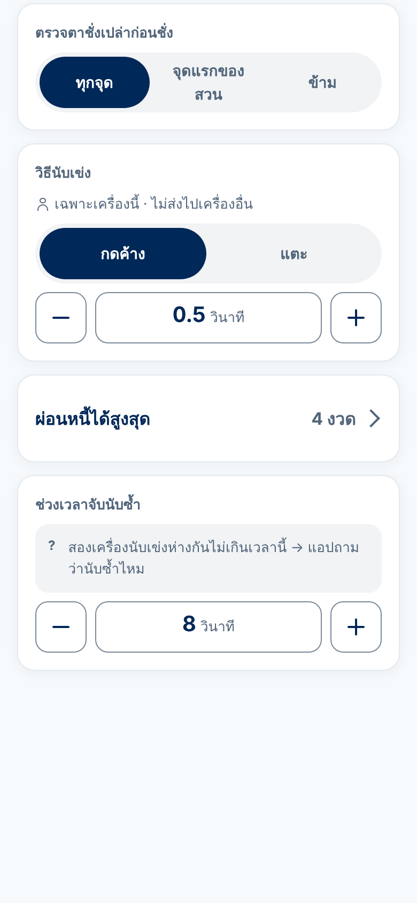
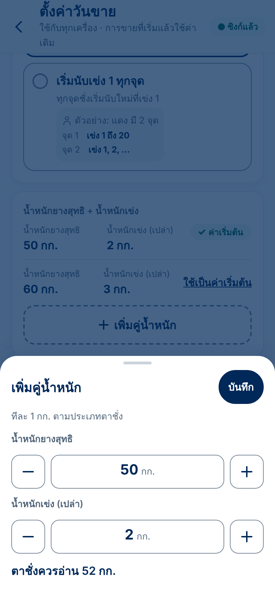
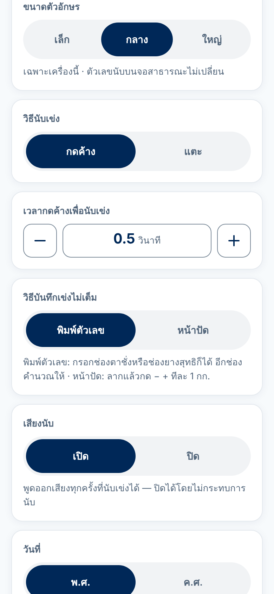
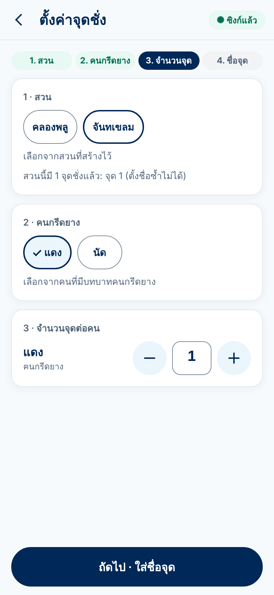
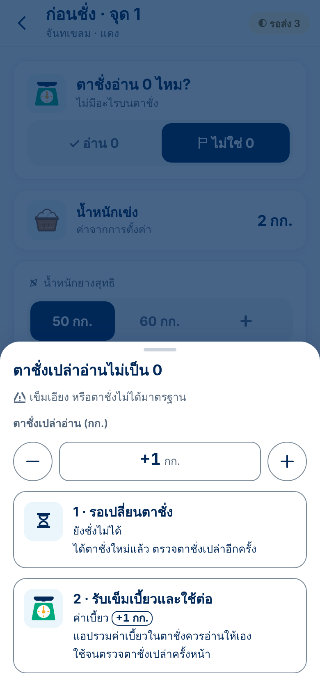
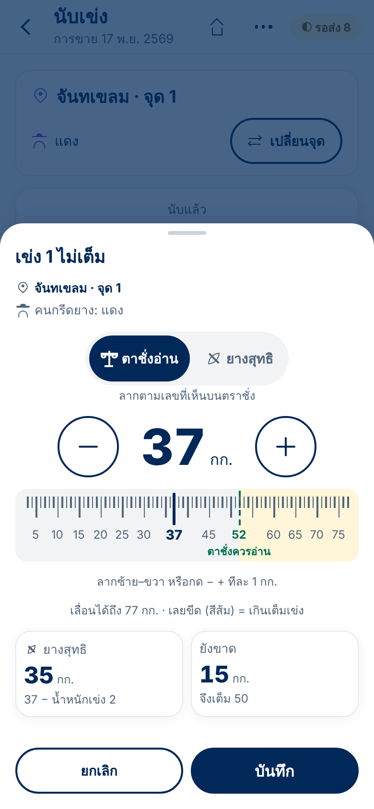

E01-S24 · ไม่มีปุ่ม − + ใน 5 หน้า
ต่อจาก E01-S20 (เจ้าของ 2026-11-17: "ก · ปิด E01-S20 + สตอรี่ใหม่สำหรับ 5 หน้า (แนะนำ)"). ทุกช่องตัวเลขที่ยังมีปุ่ม − + เปลี่ยนเป็นแบบเดียวกับแป้นของแอป: ค่าน้อยและตายตัว = แตะเลือก (เวลากดค้าง 0.5–1.0 วินาที, ช่วงจับนับซ้ำ 7–10 วินาที); ค่าอื่น = แตะช่อง แล้วพิมพ์บนแป้นของแอป. ซ้าย = หน้าจริงตอนนี้ (dev), ขวา = ที่เสนอ. ทุกจอ 390×844.
1 · ตั้งค่าวันขาย: เวลากดค้าง และ ช่วงจับนับซ้ำ

ค่าที่ใช้ได้มีแค่ 6 และ 4 ค่า (D-7, ช่วง 7–10) → แตะเลือกครั้งเดียว ไม่ต้องกดหลายที และค่าที่เลือกไม่ได้ก็ไม่มีให้เลือก
2 · เพิ่มคู่น้ำหนัก (ตั้งค่าวันขาย และ ก่อนชั่ง ใช้แผ่นเดียวกัน)

เพิ่มคู่น้ำหนัก
ทีละ 1 กก. ตามประเภทตาชั่งแป้นอยู่ในแผ่นเลย (ไม่มีแผ่นซ้อนแผ่น เหมือน E01-S20 NP-12) · "ถัดไป" ไปช่องน้ำหนักเข่ง · ปุ่มบันทึกเต็มความกว้างที่ล่างแผ่น (เลิกใช้ปุ่มกลมบนหัวแผ่น)
3 · เครื่องนี้: เวลากดค้าง

ตัวเลือกเดียวกับข้อ 1 · คำอธิบายหน้าปัดเลิกพูดถึง "− +"
4 · ตัวช่วยจุดชั่ง ขั้น 3: จำนวนจุดต่อคน

แดง มีกี่จุด
แถวทั้งแถวเป็นที่แตะ มี › (กฎ 11: ไม่มีปุ่มกลม) · อย่างน้อย 1 จุด · ✓ ปิดที่ 0
5 · ก่อนชั่ง: ตาชั่งเปล่าอ่านไม่เป็น 0

ตาชั่งเปล่าอ่านไม่เป็น 0
⚠ เข็มเอียง หรือตาชั่งไม่ได้มาตรฐาน ตาชั่งเปล่าอ่านเครื่องหมายเลือกด้วยคำ "เกิน 0 / ต่ำกว่า 0" (ไม่ใช่ปุ่ม − +) แล้วพิมพ์จำนวน กก. · ✓ ปิดที่ 0 · เพิ่มคู่น้ำหนักในหน้านี้ใช้แผ่นข้อ 2
6 · หน้านับ แผ่นเข่งไม่เต็ม โหมดหน้าปัด

เข่ง 1 ไม่เต็ม
จันทเขลม · จุด 1 · คนกรีดยาง: แดงเข่ง 1 ไม่เต็ม
เลิกใช้ปุ่มกลม − + ข้างตัวเลข: ขยับทีละน้อยด้วยการลากแถบ หรือแตะตัวเลขแล้วพิมพ์ (แป้นเดียวกับโหมดพิมพ์) · ยกเลิก/บันทึก ปักล่างแผ่นแบบ #207
คำถามถึงเจ้าของ
Q1 เวลากดค้าง และ ช่วงจับนับซ้ำ: แตะเลือกค่า (แนะนำ) หรือให้พิมพ์บนแป้นเหมือนช่องอื่น? · Q2 หน้าปัด: เอาปุ่ม − + ออก ให้ลากแถบหรือแตะตัวเลขเพื่อพิมพ์ (แนะนำ) หรือคงหน้าปัดไว้แบบเดิม? · Q3 ตาชั่งเปล่าอ่าน: เลือก "เกิน 0 / ต่ำกว่า 0" แล้วพิมพ์ กก. (แนะนำ) โอเคไหม?